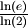
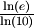
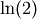
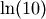
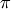
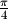
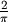
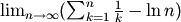

Numpy core libraries¶
New in version 1.3.0.
Starting from numpy 1.3.0, we are working on separating the pure C, “computational” code from the python dependent code. The goal is twofolds: making the code cleaner, and enabling code reuse by other extensions outside numpy (scipy, etc...).
Numpy core math library¶
The numpy core math library (‘npymath’) is a first step in this direction. This library contains most math-related C99 functionality, which can be used on platforms where C99 is not well supported. The core math functions have the same API as the C99 ones, except for the npy_* prefix.
The available functions are defined in <numpy/npy_math.h> - please refer to this header when in doubt.
Floating point classification¶
- NPY_NAN¶
This macro is defined to a NaN (Not a Number), and is guaranteed to have the signbit unset (‘positive’ NaN). The corresponding single and extension precision macro are available with the suffix F and L.
- NPY_INFINITY¶
This macro is defined to a positive inf. The corresponding single and extension precision macro are available with the suffix F and L.
- NPY_PZERO¶
This macro is defined to positive zero. The corresponding single and extension precision macro are available with the suffix F and L.
- NPY_NZERO¶
This macro is defined to negative zero (that is with the sign bit set). The corresponding single and extension precision macro are available with the suffix F and L.
- int npy_isnan(x)¶
This is a macro, and is equivalent to C99 isnan: works for single, double and extended precision, and return a non 0 value is x is a NaN.
- int npy_isfinite(x)¶
This is a macro, and is equivalent to C99 isfinite: works for single, double and extended precision, and return a non 0 value is x is neither a NaN nor an infinity.
- int npy_isinf(x)¶
This is a macro, and is equivalent to C99 isinf: works for single, double and extended precision, and return a non 0 value is x is infinite (positive and negative).
- int npy_signbit(x)¶
This is a macro, and is equivalent to C99 signbit: works for single, double and extended precision, and return a non 0 value is x has the signbit set (that is the number is negative).
- double npy_copysign(double x, double y)¶
This is a function equivalent to C99 copysign: return x with the same sign as y. Works for any value, including inf and nan. Single and extended precisions are available with suffix f and l.
New in version 1.4.0.
Useful math constants¶
The following math constants are available in npy_math.h. Single and extended precision are also available by adding the F and L suffixes respectively.
- NPY_E¶
Base of natural logarithm ()
- NPY_LOG2E¶
Logarithm to base 2 of the Euler constant ()
- NPY_LOG10E¶
Logarithm to base 10 of the Euler constant ()
- NPY_LOGE2¶
Natural logarithm of 2 ()
- NPY_LOGE10¶
Natural logarithm of 10 ()
- NPY_PI¶
Pi ()
- NPY_PI_2¶
Pi divided by 2 (
 )
)
- NPY_PI_4¶
Pi divided by 4 ()
- NPY_1_PI¶
Reciprocal of pi ()
- NPY_2_PI¶
Two times the reciprocal of pi ()
- NPY_EULER¶
- The Euler constant
- 
Low-level floating point manipulation¶
Those can be useful for precise floating point comparison.
- double npy_nextafter(double x, double y)¶
This is a function equivalent to C99 nextafter: return next representable floating point value from x in the direction of y. Single and extended precisions are available with suffix f and l.
New in version 1.4.0.
- double npy_spacing(double x)¶
This is a function equivalent to Fortran intrinsic. Return distance between x and next representable floating point value from x, e.g. spacing(1) == eps. spacing of nan and +/- inf return nan. Single and extended precisions are available with suffix f and l.
New in version 1.4.0.
Complex functions¶
New in version 1.4.0.
C99-like complex functions have been added. Those can be used if you wish to implement portable C extensions. Since we still support platforms without C99 complex type, you need to restrict to C90-compatible syntax, e.g.:
/* a = 1 + 2i \*/
npy_complex a = npy_cpack(1, 2);
npy_complex b;
b = npy_log(a);
Linking against the core math library in an extension¶
New in version 1.4.0.
To use the core math library in your own extension, you need to add the npymath compile and link options to your extension in your setup.py:
>>> from numpy.distutils.misc_util import get_info
>>> info = get_info('npymath')
>>> config.add_extension('foo', sources=['foo.c'], extra_info=info)
In other words, the usage of info is exactly the same as when using blas_info and co.
Half-precision functions¶
New in version 2.0.0.
The header file <numpy/halffloat.h> provides functions to work with IEEE 754-2008 16-bit floating point values. While this format is not typically used for numerical computations, it is useful for storing values which require floating point but do not need much precision. It can also be used as an educational tool to understand the nature of floating point round-off error.
Like for other types, NumPy includes a typedef npy_half for the 16 bit float. Unlike for most of the other types, you cannot use this as a normal type in C, since is is a typedef for npy_uint16. For example, 1.0 looks like 0x3c00 to C, and if you do an equality comparison between the different signed zeros, you will get -0.0 != 0.0 (0x8000 != 0x0000), which is incorrect.
For these reasons, NumPy provides an API to work with npy_half values accessible by including <numpy/halffloat.h> and linking to ‘npymath’. For functions that are not provided directly, such as the arithmetic operations, the preferred method is to convert to float or double and back again, as in the following example.
npy_half sum(int n, npy_half *array) {
float ret = 0;
while(n--) {
ret += npy_half_to_float(*array++);
}
return npy_float_to_half(ret);
}
External Links:
- 754-2008 IEEE Standard for Floating-Point Arithmetic
- Half-precision Float Wikipedia Article.
- OpenGL Half Float Pixel Support
- The OpenEXR image format.
- NPY_HALF_ZERO¶
This macro is defined to positive zero.
- NPY_HALF_PZERO¶
This macro is defined to positive zero.
- NPY_HALF_NZERO¶
This macro is defined to negative zero.
- NPY_HALF_ONE¶
This macro is defined to 1.0.
- NPY_HALF_NEGONE¶
This macro is defined to -1.0.
- NPY_HALF_PINF¶
This macro is defined to +inf.
- NPY_HALF_NINF¶
This macro is defined to -inf.
- NPY_HALF_NAN¶
This macro is defined to a NaN value, guaranteed to have its sign bit unset.
- float npy_half_to_float(npy_half h)¶
Converts a half-precision float to a single-precision float.
- double npy_half_to_double(npy_half h)¶
Converts a half-precision float to a double-precision float.
- npy_half npy_float_to_half(float f)¶
Converts a single-precision float to a half-precision float. The value is rounded to the nearest representable half, with ties going to the nearest even. If the value is too small or too big, the system’s floating point underflow or overflow bit will be set.
- npy_half npy_double_to_half(double d)¶
Converts a double-precision float to a half-precision float. The value is rounded to the nearest representable half, with ties going to the nearest even. If the value is too small or too big, the system’s floating point underflow or overflow bit will be set.
- int npy_half_eq(npy_half h1, npy_half h2)¶
Compares two half-precision floats (h1 == h2).
- int npy_half_ne(npy_half h1, npy_half h2)¶
Compares two half-precision floats (h1 != h2).
- int npy_half_le(npy_half h1, npy_half h2)¶
Compares two half-precision floats (h1 <= h2).
- int npy_half_lt(npy_half h1, npy_half h2)¶
Compares two half-precision floats (h1 < h2).
- int npy_half_ge(npy_half h1, npy_half h2)¶
Compares two half-precision floats (h1 >= h2).
- int npy_half_gt(npy_half h1, npy_half h2)¶
Compares two half-precision floats (h1 > h2).
- int npy_half_eq_nonan(npy_half h1, npy_half h2)¶
Compares two half-precision floats that are known to not be NaN (h1 == h2). If a value is NaN, the result is undefined.
- int npy_half_lt_nonan(npy_half h1, npy_half h2)¶
Compares two half-precision floats that are known to not be NaN (h1 < h2). If a value is NaN, the result is undefined.
- int npy_half_le_nonan(npy_half h1, npy_half h2)¶
Compares two half-precision floats that are known to not be NaN (h1 <= h2). If a value is NaN, the result is undefined.
- int npy_half_iszero(npy_half h)¶
Tests whether the half-precision float has a value equal to zero. This may be slightly faster than calling npy_half_eq(h, NPY_ZERO).
- int npy_half_isnan(npy_half h)¶
Tests whether the half-precision float is a NaN.
- int npy_half_isinf(npy_half h)¶
Tests whether the half-precision float is plus or minus Inf.
- int npy_half_isfinite(npy_half h)¶
Tests whether the half-precision float is finite (not NaN or Inf).
- int npy_half_signbit(npy_half h)¶
Returns 1 is h is negative, 0 otherwise.
- npy_half npy_half_copysign(npy_half x, npy_half y)¶
Returns the value of x with the sign bit copied from y. Works for any value, including Inf and NaN.
- npy_half npy_half_spacing(npy_half h)¶
This is the same for half-precision float as npy_spacing and npy_spacingf described in the low-level floating point section.
- npy_half npy_half_nextafter(npy_half x, npy_half y)¶
This is the same for half-precision float as npy_nextafter and npy_nextafterf described in the low-level floating point section.
- npy_uint16 npy_floatbits_to_halfbits(npy_uint32 f)¶
Low-level function which converts a 32-bit single-precision float, stored as a uint32, into a 16-bit half-precision float.
- npy_uint16 npy_doublebits_to_halfbits(npy_uint64 d)¶
Low-level function which converts a 64-bit double-precision float, stored as a uint64, into a 16-bit half-precision float.
- npy_uint32 npy_halfbits_to_floatbits(npy_uint16 h)¶
Low-level function which converts a 16-bit half-precision float into a 32-bit single-precision float, stored as a uint32.
- npy_uint64 npy_halfbits_to_doublebits(npy_uint16 h)¶
Low-level function which converts a 16-bit half-precision float into a 64-bit double-precision float, stored as a uint64.

Table Of Contents
Previous topic
Generalized Universal Function API